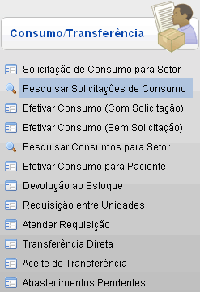
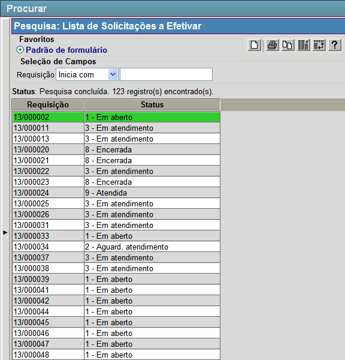

Pesquisar
Solicitações de Consumo [ Voltar ]
Esta tela permite que o usuário pesquise solicitações de consumo pelo número da Requisição, pelo Local Abastecedor, pela Data da Solicitação e pelo Status.
O formulário "Pesquisar
Solicitações de Consumo" encontra-se dentro do
menu "Movimentações - Consumo/Transferência".

Após clicar no formulário, o sistema
abrirá a seguinte tela:

Siga os passos abaixo para abrir uma solicitação de consumo:
1º Passo: configure os filtros de pesquisa de acordo com sua necessidade.
- Requisição (Contém). Entre aqui com o número ou parte do número da requisição;
- Local Abastecedor (Contém). Insira aqui o Local Abastestecedor. Utilize o botão
 [Pesquisar] para selecioná-lo a partir de uma listagem contendo todos os locais cadastrados; [Pesquisar] para selecioná-lo a partir de uma listagem contendo todos os locais cadastrados; - Data da Solicitação (Entre). Entre aqui com a data da solicitação. Utilize o botão
 [Data] para selecioná-la a partir de um calendário; [Data] para selecioná-la a partir de um calendário; - Status (Contém). Selecione o status desejado das solicitações, as opções são: "1
- Em aberto", "2 - Aguard. atendimento", "3 - Em atendimento", "4 -
Preparado", "6 - Em aberto", "7 - Ativo/Em aberto", "8 - Encerrada" e "9 - Atendida".
|
Campos de data possuem alguns
atalhos importantes, são eles:
Data
atual: digite o sinal . (ponto) e
pressione a tecla "Enter" para que o sistema retorne a data atual;
Data
do mês corrente: digite o dia do mês e
pressione a tecla "Enter" para que o sistema retorne o mês e ano
correntes;
Dias
a contar da data atual: digite o sinal + (mais) ou - (menos)
antes do número de dias em referência à data atual e pressione
a
tecla "Enter" para a data anterior ou posterior à data atual. |
2º Passo: selecione a requisição com um clique. Você será redirecionado para a tela "Solicitação de Consumo para Setor" com os dados do formulário preenchido pela requisição.
Ir
para o topo da página |